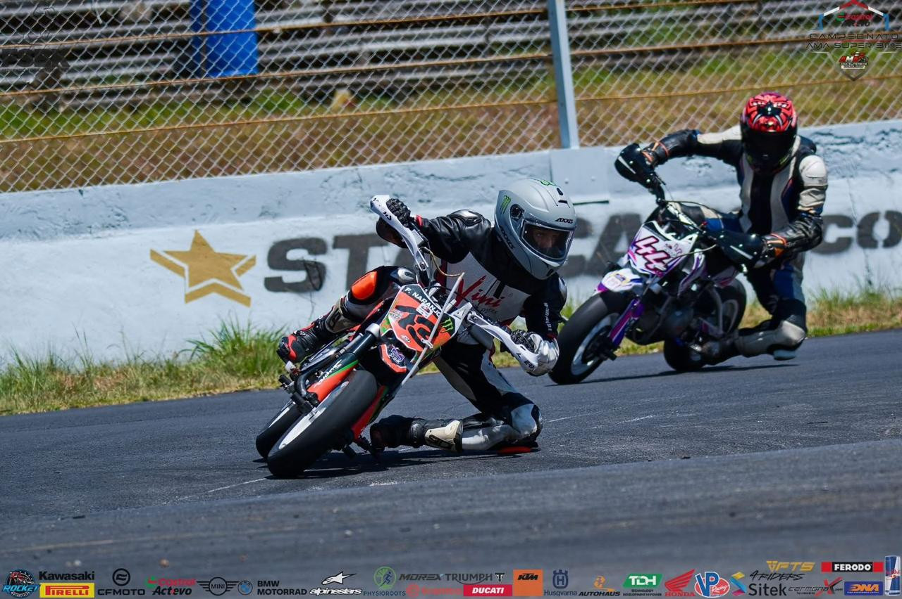

01
LÍDER ACTUAL · MM2
Primer lugar actual de la categoría MM2 en el campeonato AMA SuperBike Costa Rica.
LÍDER DEL CAMPEONATOWithout discipline, there is no glory.
Soy Franco Naranjo, piloto costarricense de motociclismo. Mi carrera deportiva está marcada por el esfuerzo, la disciplina y la constancia. Mi objetivo es competir al más alto nivel y seguir creciendo como piloto profesional.
Mi próximo gran paso será competir en Moto4 Latin Cup en 2027. Con ello, me convertiré en el primer costarricense en participar en una categoría del programa Road to MotoGP, una iniciativa que impulsa el desarrollo de jóvenes pilotos y les ofrece un camino hacia las categorías superiores del motociclismo, con el objetivo de llegar a MotoGP. Este logro representa un paso importante para mi carrera y para el motociclismo de Costa Rica.
Primer lugar actual de la categoría MM2 en el campeonato AMA SuperBike Costa Rica.
LÍDER DEL CAMPEONATOTercer lugar en la categoría MiniGP del campeonato 2019.
PODIOMi participación en una categoría del programa Road to MotoGP y un nuevo paso para representar a Costa Rica.
PRÓXIMO DESAFÍOEn 2027 daré uno de los pasos más importantes de mi carrera deportiva al competir en Moto4 Latin Cup, una categoría que forma parte del programa Road to MotoGP, el camino de desarrollo de talentos impulsado para preparar a las futuras generaciones de pilotos. Moto4 representa una oportunidad para competir en un entorno internacional, enfrentarme a pilotos de alto nivel y continuar mi formación con la mirada puesta en las categorías superiores del motociclismo.
Mi participación marcará un hito para Costa Rica: seré el primer costarricense en competir en una categoría del programa Road to MotoGP. Más que un nuevo campeonato, representa la oportunidad de llevar el talento costarricense a una plataforma internacional, abrir camino para futuras generaciones y demostrar que desde Costa Rica también se puede aspirar a llegar a lo más alto del motociclismo.
Mi participación en Moto4 Latin Cup 2027 representa un paso histórico para el motociclismo costarricense. Es un proyecto deportivo que lleva el nombre de Costa Rica a un escenario internacional.
Busco empresas y aliados estratégicos que quieran formar parte de este camino y crecer junto a un proyecto con objetivos deportivos, proyección internacional y una historia que contar.
Presencia de marca vinculada a mi participación deportiva y a mi trayectoria en el motociclismo.
Contenido sobre entrenamientos, competencias, preparación y experiencias durante la temporada deportiva.
Relaciones de colaboración con empresas que quieran apoyar el talento deportivo y formar parte de este proyecto.
Conversemos sobre oportunidades de colaboración y patrocinio para la temporada 2027 de Moto4 Latin Cup.
HABLEMOS DE PATROCINIO


Para consultas profesionales, oportunidades de patrocinio y colaboraciones deportivas, puedes ponerte en contacto.
CONTACTAR